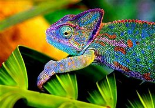

El camaleón, Chamaeleonidae, es un pequeño reptil que pertenece a la familia Chamaeleonidae, de la cual obtiene el mismo nombre científico. Son aproximadamente 160 especies de lagartos miembros del orden Squamata, del suborden Lacertilia, del infraorden Iguania y de la familia Chamaeleonidae. Son conocidos por sus cambios de color, que incluyen una variada gama de los colores menos imaginados.
Aun así, esa no es la única características de ellos que podemos destacar. Por ejemplo, ¿sabrías decir dónde viven y qué comen los camaleones? En el siguiente artículo de BIOenciclopedia te contamos cuáles son las características del camaleón, su alimentación y hábitat, además de cómo se reproduce.
Tienen cuatro patas: cuentan 5 dedos, 3 hacia afuera y 2 hacia adentro.
Sus dedos están fusionados: son adyacentes por lo que cuentan con almohadillas oponibles y garras en cada dedo.
Sus ojos pueden moverse independientemente uno de otro: como resultado, los camaleones tienen una visión de 360°
Cuentan con colas prensiles: esta es una característica de los camaleones que son arbóreos.
Algunos camaleones presentan dimorfismo sexual: los machos son levemente más grandes y de colores más llamativos. De acuerdo con la especie, los camaleones pueden medir hasta 68,5 centímetros de longitud. El más pequeño mide unos 15 milímetros y se trata del camaleón Brookesia micra.
menu
menu